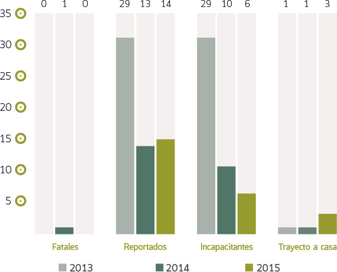
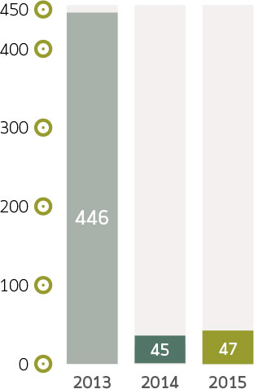

GRUPO POCHTECA

UNA EMPRESA RESPONSABLE
Salud y seguridad en el trabajo
Seguridad
G4-14, DMA SALUD Y SEGURIDAD EN EL TRABAJOA partir de 2013 la estrategia de seguridad se ha venido fortaleciendo a través de capacitación, supervisión y seguimiento, así como incrementando la conciencia de seguridad del personal dentro y fuera de nuestras instalaciones.
G4-LA5Contamos con comisiones de seguridad y brigadas según lo establecido en la Ley Federal del Trabajo en cada uno de nuestros centros de trabajo. El total de personal incluido en estas comisiones y brigadas es aproximadamente el 10% del total de nuestro personal. Sin embargo, el 100% del personal se encuentra representado por dichas comisiones.
Existen evaluaciones de riesgo por posición de trabajo y con base en ellas se define el equipo de protección personal requerido y el plan de capacitación y salud. Dado que los materiales que manejamos en su mayoría están catalogados como químicos peligrosos es necesaria una evaluación de nuevos materiales, así como la generación de estudios de riesgo y programas de prevención de accidentes requeridos por la SEMARNAT previo a su ingreso y manejo en nuestras instalaciones.
Accidentes y lesiones G4-LA6

Días de incapacidad

De acuerdo a los parámetros recomendado por la OSHA, nos mantenemos por debajo del estándar por cada 100 horas de trabajadores de tiempo completo, el cual marca como límite máximo 3.2.
| Año | Índice de incidentes en áreas operativas por cada 100 horas de trabajadores de tiempo completo | Tasa global de incidencia por cada 100 horas de trabajadores de tiempo completo |
|---|---|---|
| 2013 | 1.381 | 1.676 |
| 2014 | 0.418 | 1.778 |
| 2015 | 0.650 | 3.034 |
Pochteca se asegura de garantizar el derecho de los colaboradores a ausentarse por periodos de maternidad de acuerdo a lo establecido en la Ley Federal del Trabajo. Adicionalmente, organización otorga las facilidades necesarias para complementar con horarios flexibles y trabajo en casa para la reincorporación adecuada a sus funciones. Para este fin, se han hecho inversiones importantes en infraestructura y equipo para asegurar la conexión de los colaboradores a sus funciones en todo momento.
La disponibilidad de equipos actualmente es la siguiente:
- 80% con equipos de cómputo portátiles
- 60% con teléfonos inteligentes
Adicionalmente, se han hecho mejoras en conexión de voz y datos como redes VPN, telefonía VOIP y acceso a información en la nube a través de “pochtecaNET”, todo esto con una inversión de más de 10 millones de pesos.
| Total empleados con incapacidad 2015 | 70 |
| Empleadas incapacidad por maternidad 2015 | 10 |
| Días subsidiados por incapacidad por maternidad | 581 |
| Porcentaje de personas incapacitadas por maternidad en el año 2015 | 14.3% |
Salud de los trabajadores
La salud de nuestros trabajadores es muy importante. Durante 2015 se realizaron estudios de gabinete completos a 385 trabajadores, lo cual representa el 30% del personal activo. Basados en los resultados de estos estudios se establecen los planes y ferias de la salud, orientados a minimizar los riesgos. Algunas de las actividades para dichas ferias han sido pláticas de equidad de género, VIH, vacunas y detección de diabetes e hipertensión.
La inversión realizada fue de $526,791 y el plan para 2016 es completar estos estudios para el 80% de la población.
Otra de las herramientas con las que Pochteca cuenta para apoyar el bienestar y salud de sus colaboradores es la línea Orienta, la cual se da a conocer a los colaboradores dentro de su kit de bienvenida; además, de manera regular se realizan comunicados para difundir sus ventajas.